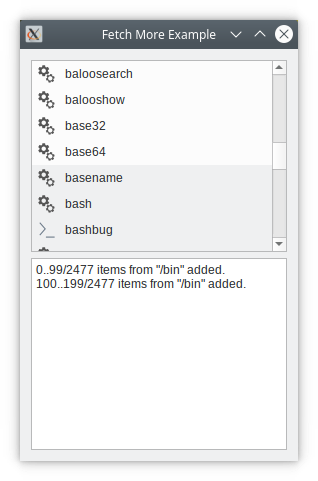

Fetch More Example
The Fetch More example shows how to add items to an item view model on demand.

When you have large - or perhaps even infinite - data sets, you will need to add items to the model in batches, and preferably only when the items are needed by the view (i.e., when they become visible in the view).
In this example, we implement FileListModel - an item view model containing the entries of a directory. We also have Window, which sets up the GUI and feeds the model with directories.
The UI consists of a dialog with a list showing the contents of the root directory. Directories can be navigated by double-clicking.
At the bottom, there is a log window displaying messages when the view asks the model for more data.
To exercise it, navigate to a large directory (say /bin), and scroll to the bottom. Log messages appear showing the data being retrieved.
Let's take a tour of FileListModel's code.
FileListModel Class Definition
The FileListModel inherits QAbstractListModel and contains the contents of a directory. It will add items to itself only when requested to do so by the view.
class FileListModel : public QAbstractListModel { Q_OBJECT public: FileListModel(QObject *parent = nullptr); int rowCount(const QModelIndex &parent = QModelIndex()) const override; QVariant data(const QModelIndex &index, int role = Qt::DisplayRole) const override; QFileInfo fileInfoAt(const QModelIndex &) const; signals: void numberPopulated(const QString &path, int start, int number, int total); public slots: void setDirPath(const QString &path); protected: bool canFetchMore(const QModelIndex &parent) const override; void fetchMore(const QModelIndex &parent) override; private: QFileInfoList fileList; QString path; QFileIconProvider iconProvider; int fileCount = 0; };
The secret lies in the reimplementation of fetchMore() and canFetchMore() from QAbstractItemModel. These functions are called by the item view when it needs more items.
The setDirPath() function sets the directory the model will work on. We emit numberPopulated() each time we add a batch of items to the model.
We keep all directory entries in fileList. fileCount is the number of items that have been added to the model.
FileListModel Class Implementation
We start by checking out the setDirPath().
void FileListModel::setDirPath(const QString &path) { QDir dir(path); beginResetModel(); this->path = path; fileList = dir.entryInfoList(QDir::NoDot | QDir::AllEntries, QDir::Name); fileCount = 0; endResetModel(); }
We use a QDir to get the contents of the directory. We need to inform QAbstractItemModel that we want to remove all items - if any - from the model.
bool FileListModel::canFetchMore(const QModelIndex &parent) const { if (parent.isValid()) return false; return (fileCount < fileList.size()); }
The canFetchMore() function is called by the view when it needs more items. We return true if there still are entries that we have not added to the model; otherwise, we return false.
And now, the fetchMore() function itself:
void FileListModel::fetchMore(const QModelIndex &parent) { if (parent.isValid()) return; const int start = fileCount; const int remainder = int(fileList.size()) - start; const int itemsToFetch = qMin(batchSize, remainder); if (itemsToFetch <= 0) return; beginInsertRows(QModelIndex(), start, start + itemsToFetch - 1); fileCount += itemsToFetch; endInsertRows(); emit numberPopulated(path, start, itemsToFetch, int(fileList.size())); }
We first calculate the number of items to fetch. beginInsertRows() and endInsertRows() are mandatory for QAbstractItemModel to keep up with the row insertions. Finally, we emit numberPopulated(), which is picked up by Window.
To complete the tour, we also look at rowCount() and data().
int FileListModel::rowCount(const QModelIndex &parent) const { return parent.isValid() ? 0 : fileCount; } QVariant FileListModel::data(const QModelIndex &index, int role) const { if (!index.isValid()) return {}; const int row = index.row(); if (row >= fileList.size() || row < 0) return {}; switch (role) { case Qt::DisplayRole: return fileList.at(row).fileName(); case Qt::BackgroundRole: { const int batch = row / batchSize; const QPalette &palette = QGuiApplication::palette(); return (batch % 2) != 0 ? palette.alternateBase() : palette.base(); } case Qt::DecorationRole: return iconProvider.icon(fileList.at(row)); } return {}; }
Notice that the row count is only the items we have added so far, i.e., not the number of entries in the directory.
In data(), we return the appropriate entry from the fileList. We also separate the batches with a different background color.